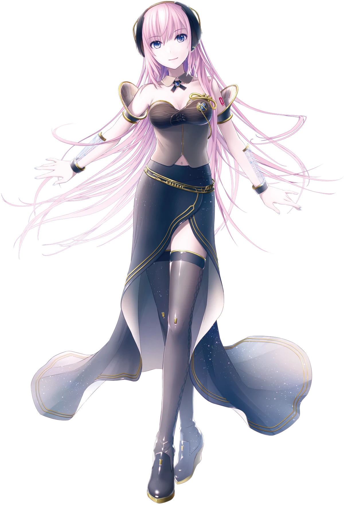
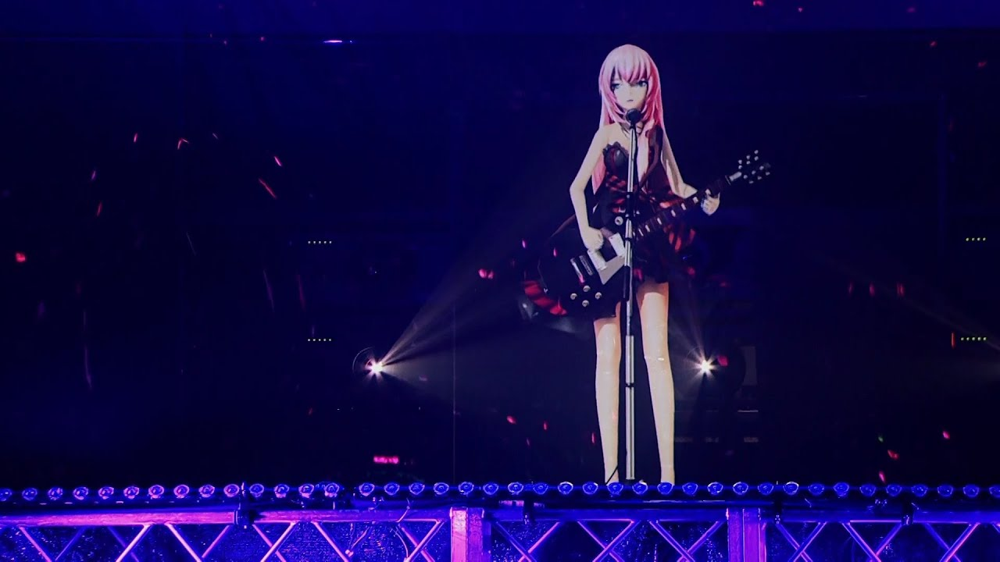

| Released | |
|---|---|
| Developer | Crypton Future Media |
| Voice Provider | Yū Asakawa |
| Genre | Vocaloid • J-pop • Electronic • Ballad • Jazz |
| Character Age | 20 (Fan-accepted) |
| Languages | Japanese • English |
| Years Active | 2009 ‐ Present |
Origin & Development
Megurine Luka was released on by Crypton Future Media, making her their third Vocaloid after Hatsune Miku and the Kagamine twins. Her voice was provided by Yū Asakawa, a prolific voice actress whose deep, composed delivery gave Luka a maturity completely unlike anything else in the lineup.
The big deal about Luka at launch was that she was the first Crypton Vocaloid to support English out of the box. It wasn't flawless, but the intent was clear — Luka was built to cross language barriers. That decision alone drew in a whole segment of the Western fandom that was waiting for exactly this.
"Luka arrived and the whole library got a little more grown up. Nothing had sounded like her before."
Versions & Updates
Each release refined her voice further — smoother, more controlled, always that same warmth underneath.
- Megurine Luka V1 (2009) : The debut. Bilingual from day one, with a richness in the lower register that producers immediately fell in love with.
- Megurine Luka V4X (2015) : A major upgrade. Four Japanese voice banks — Soft, Powerful, Vivid, and Solid — plus a much-improved English bank. Most producers still use this one.
- Megurine Luka NT (2021) : AI-assisted and eerily expressive. The phrasing has a nuance that V1 couldn't have dreamed of. Still unmistakably Luka.
Cultural Impact
Luka has this specific niche in the fandom — she's the sophisticated one. The late-night voice, the cinematic voice, the one producers reach for when the song needs emotional weight rather than brightness. Old-school fans have a deep attachment to her that's harder to explain than it is to feel.
Her long pink hair, teal tattoo, and layered outfit have appeared in games, concerts, and crossover media for over a decade. The community assigned her a love of tuna with no official origin, and it has become completely inseparable from who she is as a character. You cannot have one without the other.
Concerts & Performances
Like the rest of the Crypton family, Luka performs live as a holographic projection at Magical Mirai and Miku Expo events around the world. Her sets tend toward the slower, heavier songs — the ones that turn an arena into something quieter and more personal. A hologram in a pink dress making thousands of people cry is exactly as powerful as it sounds.
Watch a Live Concert Clip
Popular Songs
-
Just Be Friends ‐ By Dixie Flatline. The breakup song. Luka's voice carrying that chorus is one of the most affecting things in Vocaloid history. If you've never listened to her before, start here.
Listen on YouTube!
-
Double Lariat ‐ By Agoaniki-P. Poetic, melancholic, beautifully strange. About spinning so fast you fly away from your own life. Luka sells every second of it.
Listen on YouTube!
-
Luka Luka ★ Night Fever ‐ By samfree. Pure infectious disco energy, the complete opposite of everything above. The range on this woman.
Listen on YouTube!
Did You Know?
- Luka was the first Crypton Vocaloid to launch with an English voicebank — a bold move in 2009 that paid off enormously.
- Her name comes from the Japanese words meguru (to wander) and ne (sound) — her full name essentially means "wandering sound."
- Voice provider Yū Asakawa is a well-known anime voice actress — that professional depth comes through in every note Luka sings.
- The tuna obsession has no official source. It spread through fan art and community memes and is now simply part of who she is.
- Just Be Friends is widely considered one of the most important Vocaloid songs ever made — for its production quality, emotional depth, and lasting influence.
- Her V4X package shipped with four distinct Japanese voice banks, giving producers an unusual amount of tonal control.
Gallery


↑ Back to Top
Conclusion
Megurine Luka is proof that the Vocaloid library could hold something genuinely sophisticated. She doesn't need to shout or be the most recognizable face in the room. She just needs to sing, and everything gets a little heavier and a little more beautiful. Deep voice, pink hair, a name that means wandering sound, and a tuna obsession nobody planned. That's Luka.